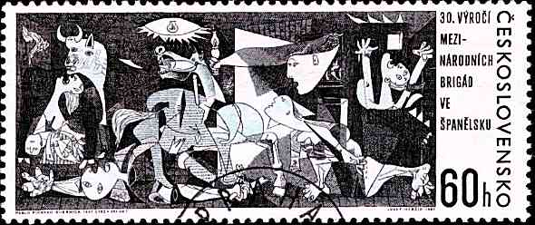
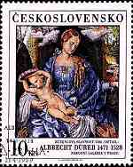

| Gerhard Batz, Germany
|
 |
I'm a German stamp collector, born in 1950, married and father of a daughter and two sons. I studied social sciences and worked as market research director in a great German mail order company for many years. At this time, I'm managing director of a small direct marketing company. I started stamp collecting already in my childhood, of course without any clear direction and I only found my specialized philatelic area not before having met my wife. Her parents are so-called "Sudentendeutsche", citizens of the former Czechoslovakia of German origin who had to leave their home in the Czech lands after the war. While visiting our relatives there, one day I found a small album with Czechoslovak pre war stamps and so I started collecting Czechoslovak stamps. And in so doing, I learned a lot about the special philosophy of stamp producing in Czechoslovakia coming from the close relationship between the Czech and Slovak graphic artists and the postal authorities. This again caused in me a deep interest in Czech and Slovak graphic art and it's position within the Czech and Slovak art in general. A stamp gallery with many pictures and information about the Czech and Slovak graphic and stamp art shows my high interest in this topic (unfortunately the complete version only in German, but some parts also in English and Czech). |
| I'm member of the Bund deutscher Philatelisten (BdPh). Since 1998 I maintain a resources site for all collectors of Czech/Slovak stamps. You can find there now the greatest number of links to philatelic websites dealing with Czech and Slovak stamps and philately on the web. My other interests are playing chess, collecting graphic art, rock music particularly from the sixties and soccer/football. When I was younger, I played soccer, but now there is no time enough for sports anymore. I often visit the Czech Republic and of course particularly the capital Prague which can be reached from our residence in less than 4 hours. More about me and my interests can be found on my Things I Like Page. |


"Naše poštovní známka měla to štěstí, že u jejího zrodu stáli před šedesátí lety takovi umělci
jako Alfons Mucha, Jakub Obrovský či V. H. Brunner.
V té době ještě nikdo netušil, že tato tvorba stane součastí výtvarného umění
a že účinným posláním známky bude umělecké hodnoty šířit."
(Our postage stamp had the fortune that 60 years ago such artists like Alfons Mucha, Jakub Obrovský or V. H. Brunner stood at its cradle.
At this time no one could foresee, that this art would become part of the fine arts and that artistic values will be spread by sending stamps.
Miroslav Nýdl (1978)
 Leden (January) picture by Josef Mánes (1820-1871) part of the Apostle Clock from the Town Hall in Prague engraved by Bohumil Heinz (1936) |
Among the great number of stamps which are annually issued in the whole world and on which pictures of great artists are depicted,
there are too many, which don't meet the high demands of contemporary graphic art.
The interest of collectors in such motifs is leading to an overproduction of stamps which only reproduce the
pictures, paintings, drawings or graphics in a photo-mechanical way, e.g. by typography or offset printing.
The results mostly are size reduced, profusely colored small pictures whose disproportionally diminuation
to the format of a stamp falsifies and unnaturally reproduces the original work of art. There has never been such a way of transforming and showing art on stamps in Czechoslovakia. Nevertheless, there are of course also examples of a very passive "taking over" of or a simply "sketching" from the originals, particularly during the times, when the technical means only allowed unicolored stamps. The gradual development of the print technique to four, five and multicolored stamp graphics lead to the consequence that the artistic standard and challenge changed. Above all, there was a turning away from the linear compactness and from the homogeneous surface of the stamp. This again required a more detailed and dense drawing and engraving of the lines in order to make possible an optimal coloring of the stamp engraved. |
|
Therefore the craft of the engraver changed, too. It wasn't anymore a simple and experienced work of his
hands, but more it was necessary for him to develop an own understanding of the work to be engraved
and to exhaust by his own artistic instinct all possibilities and chances which the work of art is offering.
The originality of the so-called "Czechoslovak school of stamp engraving" lies in the fact, that
stamp designing is not only an indifferent reproduction of a pattern into steel, but more a particular and special
style of stamp creating, moreover an independent artistic and creative world which is recognized as an
special kind of art in Czechoslovakia. During the 80 year history of Czech and Slovak stamp creating and
producing, not much more than 20 engravers gave this art its face which is admired in the whole world. Therefore the stamp art of Czechoslovak stamps can not be separated from works of art on those stamps. Because of the special kind of creating Czechoslovak stamps, every issue has to be considered as a work of art by its own and stamp art is seen as a special kind of the fine arts in general. Among others, this can also be seen for example in the fact that probably the only university institut,e which is exclusivly dealing with postal graphic, exists at the Academy of Fine Arts in Bratislava. It is ruled by Slovakia's leading stamp engraver Martin Činovský who is educating there a new generation of postal graphic artists. |  Toaleta mladé ženy (Toilet of a young woman) picture by Tiziano Vecellio (1487-1576) first work of art on a Czechoslovak stamp which was printed multi-colored engraved by Jiří Švengsbír (1965) |
 Bruneta (Brunette) picture by Alfons Mucha (1860-1839) one of many works of art by Mucha on Czechoslovak/Czech stamps engraved by Bedřich Housa (2000) | The tradition of Czechoslovak stamp art was founded in 1918, when Alfons Mucha, one of the greatest artists of the Art Nouveau, designed the first Czechoslovak stamp - the so-called "hradčany" issue. Already soon after, other artists continued this tradition. In the years before WWII particularly Max Švabinský, surely the greatest Czech artist after Mucha, has to be mentioned. By his ideas he forced the artistic development of the designing of Czechoslovak stamps (and also banknotes). He was responsible for choosing the best artists of the country for stamp designing, e.g. sculptors like Jakub Obrovský, designers like Jaroslav Benda, graphic artists like Vratislav Hugo Brunner or painters like himself. Besides this, he also had much influence on choosing works of art for depicting on stamps. So you find pictures of well-known Czech artists like Mikoláš Aleš, Josef Mánes, Václav Brožík and many more already among the first stamps of Czechoslovakia in the 20ies and 30ies. Švabinský also forced the use of steel engraving for the stamps. Together with the graphic artist Eduard Karel and with the help of Austria's greatest engraver Ferdinand Schirnböck he himself created the first Czechoslovak stamp in this technique already in 1920. Later he promoted and patronized the two great engravers of the Czechoslovak pre-war time - first the German Karl Seizinger and later Bohumil Heinz who became a national idol for many Czech graphic artists. |
| During their more than 80 year history, Czech and Slovak stamps always have been determined by the high quality level of their engravers. Great milestones in the development of Czechoslovak stamps were set by those craftsmen of stamp art. Jindra Schmidt in cooperation with Max Švabinský was responsible for the first multi-colored stamps in Czechoslovakia - a 9-value series of butterflies in 1961 (MiNr. 1301-1309). Jiří Švengsbír transferred the first work of art into a multicolored Czechoslovak stamp in 1965 - Tizian's "Toilet of a Young Woman" (MiNr. 1560) - and started with this stamp the annual row "umění" (=art), in which every year great works of art are depicted, engraved in the individual style of the engraver. In 1966, Josef Herčík gained international reputation by his transposition of Picasso's over-dimensioned picture "Guernica" into the tiny from of a stamp (MiNr. 1637). Other engravers like for example Miloš Ondráček or Bedřich Housa and other ones transfer great works of art onto stamps of the "umění" series every year. |  Splynutí duší (High Time of Feelings) picture by Max Švabinský (1873-1962) issue to Švabinský's 100th birthday engraved by Jindra Schmidt (1973) |

 Detail from "Rosenkranzfest" (Rosary Celebration) picture by Albrecht Dürer (1471-1528) Top highlight of works of arts on Czechoslovak stamps engraved by Miloš Ondráček (1989) |
This "umění" series and also all other stamps of Czechoslovakia and the modern Czech Republic have mostly been created by members of the HOLLAR association of the Czech print artists in which the top 150 graphic artists are united. Therefore the list of the Czech and Slovak stamp designers can be read as a "Who's who" of the whole graphic art in both of the countries. The modern Czech Republic and Slovakia are continuing with this tradition of stamp creating and engraving and also with the series "umění". While in the formerCzechoslovakia usually five works of art were issued, mainly by Czech and Slovak artists, the successor states issue two or three works every year. As a rule, Czech and Slovak artists are honored by a stamp, but often also international ones like Picasso, Rubens or El Greco or some from the German language countries like Albrecht Dürer, Lucas Cranach or modern painters like Max Ernst. Although there is a discussion about using more "modern" print technologies in stamp producing and not more such "old-fashioned" ones like today, we should hope that the Czech Republic as well as Slovakia will still maintain their tradition and high quality level in designing and engraving stamps for a long time. |
| Created
August 2001 Revised: 07/30/01. Copyright © 2001 by Gerhard Batz, Germany. All rights reserved worldwide. |
|
|